F5 Identity and Access Management Solutions > 300 Series: Advanced Use Cases & Solutions Source | Edit on
Lab 1: ADFS Proxy using ADFS Authentication¶
Task 1 - Setup Lab Environment¶
To access your dedicated student lab environment, you will require a web browser and Remote Desktop Protocol (RDP) client software. The web browser will be used to access the Lab Training Portal. The RDP client will be used to connect to the Jump Host, where you will be able to access the BIG-IP management interfaces (HTTPS, SSH).
Click DEPLOYMENT located on the top left corner to display the environment
Click ACCESS next to jumpohost.f5lab.local

Select your RDP resolution.
The RDP client on your local host establishes a RDP connection to the Jumphost.
Login with the following credentials:
- User: f5lab\user1
- Password: user1
After successful logon the Chrome browser will auto launch opening the site https://portal.f5lab.local. This process usually takes 30 seconds after logon.
Click the Classes tab at the top of the page.

Scroll down the page until you see 305 ADFS Proxy on the left
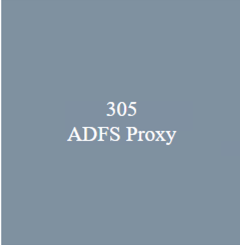
Hover over tile ADFS Proxy using ADFS Authentication. A start and stop icon should appear within the tile. Click the Play Button to start the automation to build the environment
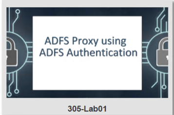 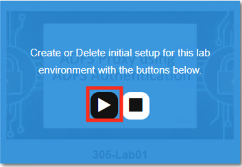 The screen should refresh displaying the progress of the automation within 30 seconds. Scroll to the bottom of the automation workflow to ensure all requests succeeded. If you experience errors try running the automation a second time or open an issue on the Access Labs Repo.
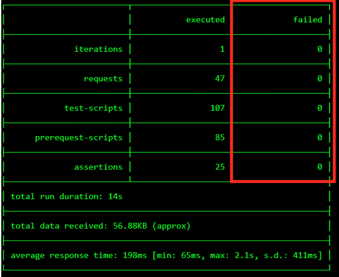
Task 2 - Create the ADFS Server Pool¶
From the jumphost browser navigate to https://bigip1.f5lab.local
Login with the following credentials:
- username admin
- password admin
Navigate to Local Traffic >> Pool >> Pool List. Click the + (Plus Symbol)
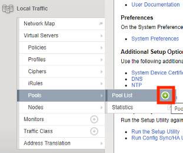
Enter the Name adfs_pool
Select the Health Monitor https from the list of available monitors
Enter the Member Address 10.1.20.13
Enter the Member Service Port 443
Click Add
Click Finished
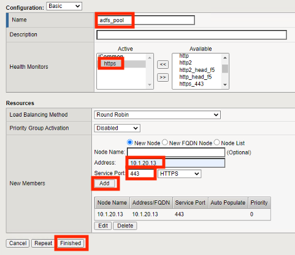
Task 3 - Create an ADFS Server-side SSL Profile¶
Navigate to Local Traffic >> Profiles >> SSL >> Server. Click the + (Plus Symbol)
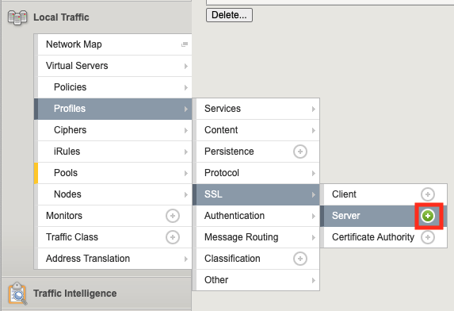
Enter the Name adfs_serverssl
From the Configuration dropdown select Advanced
On the Server Name line Check the Custom box on the right side
Enter the Server Name adfs.acme.com
Click Finished
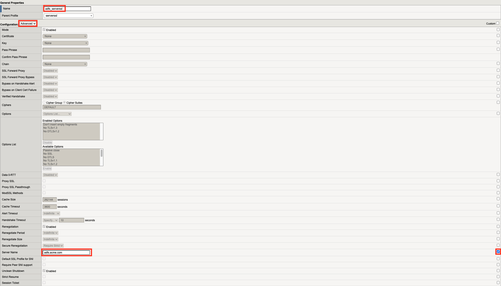
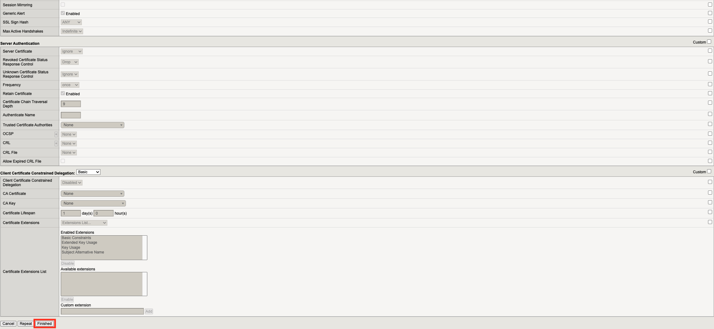
Task 4 - Create an ADFS Client-side SSL Profile¶
Navigate to Local Traffic >> Profiles >> SSL >> Client. Click the + (Plus Symbol)
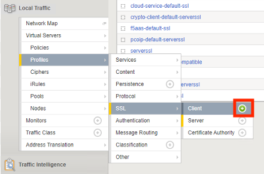
Enter the Name adfs_clientssl
On the Certificate Key Chain line check the Custom box on the right side
Click Add
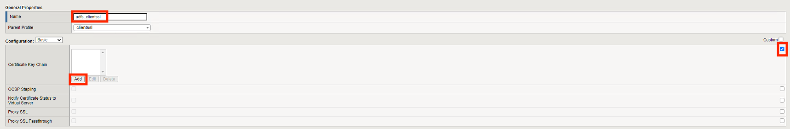
From the Certificate Dropdown select acme.com-wildcard
From the Key dropdown select acme.com-wildcard
Click Add
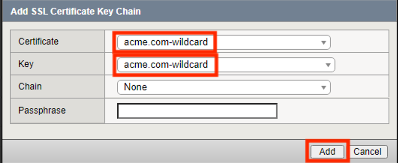
Click Finished
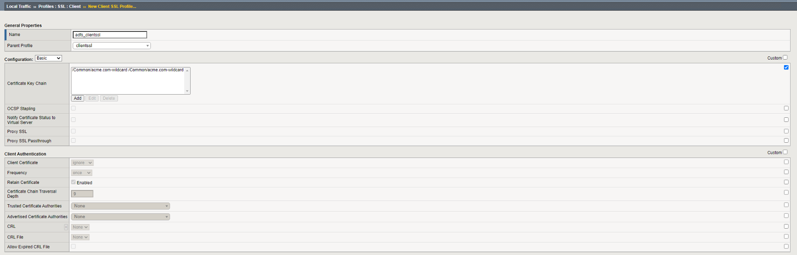
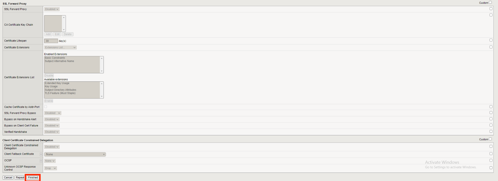
Task 5 - Create an ADFS Client-side SSL Profile for Certificate Authentication¶
Navigate to Local Traffic >> Profiles >> SSL >> Client. Click the + (Plus Symbol)
Enter the Name adfs_clientssl_certauth
Select Parent Profile adfs_clientssl
On the Trusted Certificate Authorities line check the Custom box on the right side
From the Trusted certifciate Authoriates dropdown select ca.f5lab.local
On the Advertised Certificate Authorities line check the Custom box on the right side
From the Advertised certifciate Authoriates dropdown select ca.f5lab.local
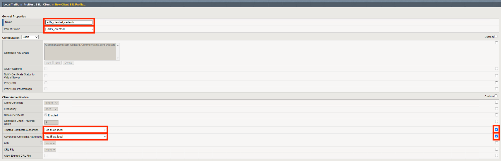
Click Finished
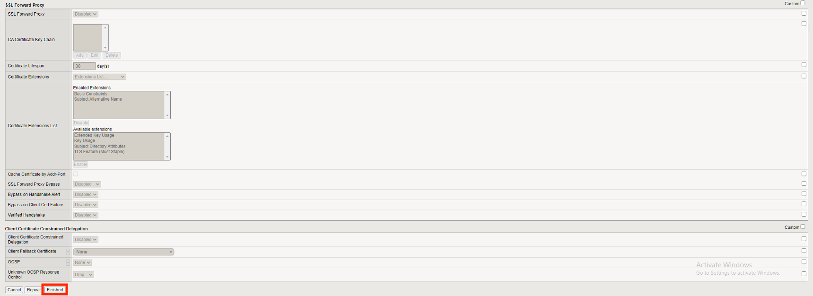
Task 6 - Create the AD Authenticated ADFS Proxy Virtual Server¶
Navigate to Local Traffic >> Virtual Servers >> Virtual Server List. Click the + (Plus Symbol)
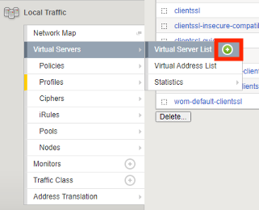
Enter the Name adfs-ad-auth
Enter the Destination Address 10.1.10.101
Enter the Service Port 443
Select the HTTP profile(Client) http from the dropdown
In the SSL Profile(Client) section move adfs_clientssl under Selected
In the SSL Profile(Server) section move adfs_serverssl under Selected
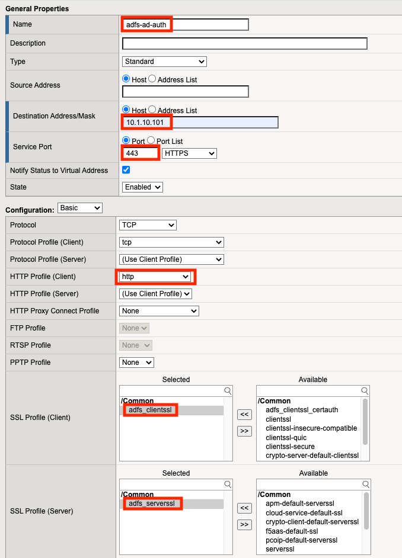
From the Source Address Translation dropdown select Auto Map
Check the ADFS Proxy Enabled box
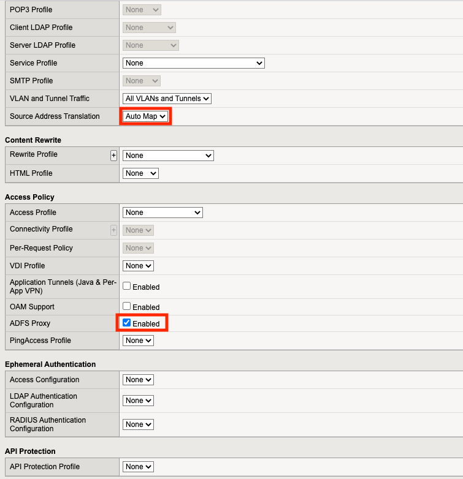
From the Default Pool dropdown select adfs_pool
Click Finished
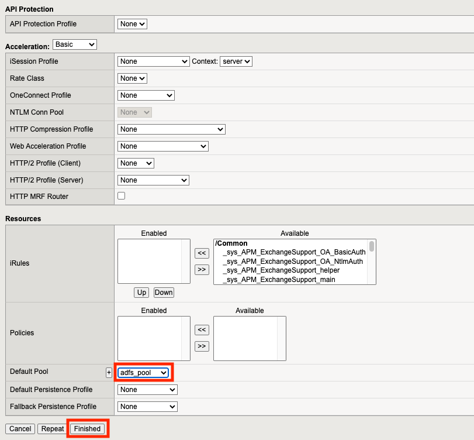
Click adfs-ad-auth
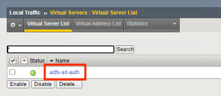
Scroll down to the Access Policy section and click Establish Trust
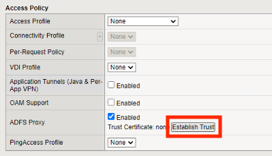
Enter the Username admin
Enter the Password admin
Enter the Certificate Name adfs
Click OK
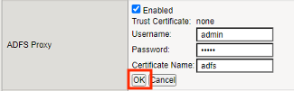
A Trust certificate should now be displayed.
Click Update
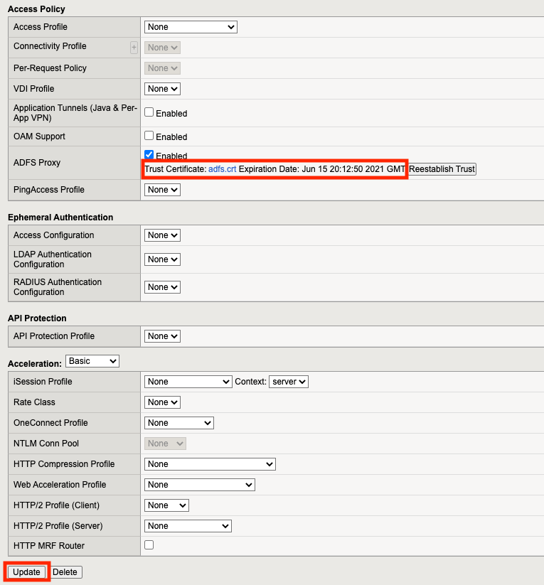
Task 7 - Create the Certificate Authentication ADFS Proxy Virtual Server¶
Navigate to Local Traffic >> Virtual Servers >> Virtual Server List. Click the + (Plus Symbol)
Enter the Name adfs-cert-auth
Enter the Destination Address 10.1.10.101
Enter the Service Port 49443
Select the HTTP profile(Client) http from the dropdown
In the SSL Profile(Client) section move adfs_clientssl_certauth under Selected
In the SSL Profile(Server) section move adfs_serverssl under Selected
From the Source Address Translation dropdown select Auto Map
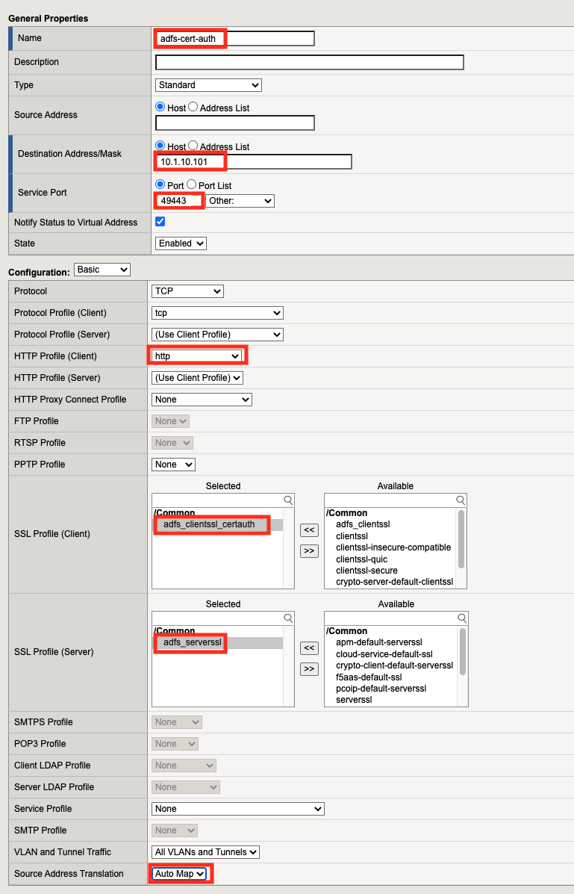
Check the ADFS Proxy Enabled box
From the Default Pool dropdown select adfs_pool
Click Finished
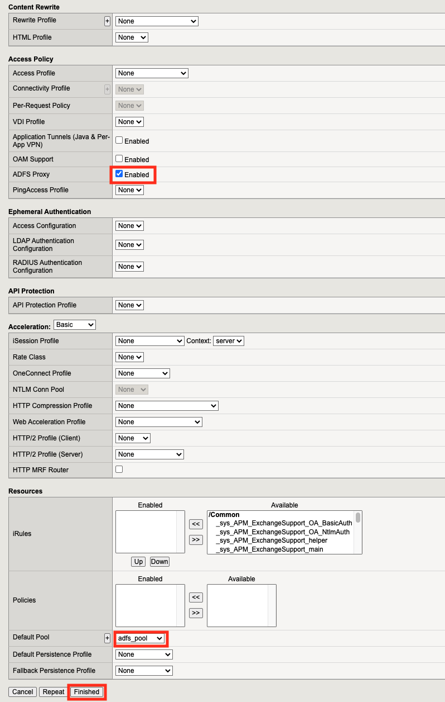
Task 8 - Test username and password Authenticaiton¶
On the jumphost open a webbrowser and navigate to https://sp.acme.com. You will redirected to https://adfs.acme.com
Enter the username user1@f5lab.local
Enter the password user1
Click Sign in
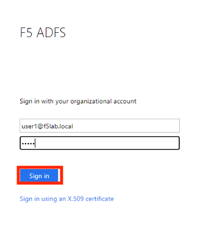
After successful login at ADFS you redirected to http://sp.acme.com
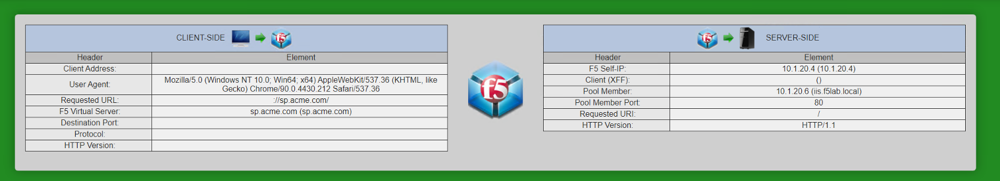
Task 9 - Test Certificate authentication¶
Close the browser completely from the previous test or open a new tab in ingonito(private) view
On the jumphost open a webbrowser and navigate to https://sp.acme.com. You will redirected to https://adfs.acme.com
Select Sign in using an X.509 Certificate
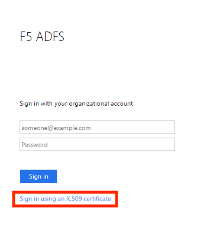
Select the user1 certificate
Click OK
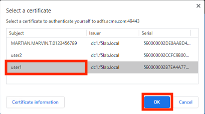
After successful login at ADFS you redirected to http://sp.acme.com
Task 10 - Lab Cleanup¶
From the jumphost browser navigate to https://bigip1.f5lab.local
Login with the following credentials:
- username admin
- password admin
From a browser on the jumphost navigate to https://portal.f5lab.local
Click the Classes tab at the top of the page.
Scroll down the page until you see 305 ADFS Proxy on the left
Hover over the tile ADFS Proxy using ADFS Authentication. A start and stop icon should appear within the tile. Click the Stop Button to start the automation to delete any prebuilt objects
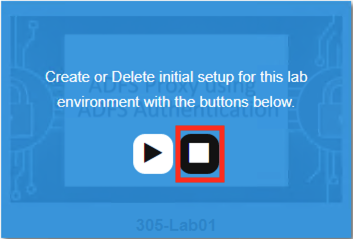 The screen should refresh displaying the progress of the automation within 30 seconds. Scroll to the bottom of the automation workflow to ensure all requests succeeded. If you you experience errors try running the automation a second time or open an issue on the Access Labs Repo.
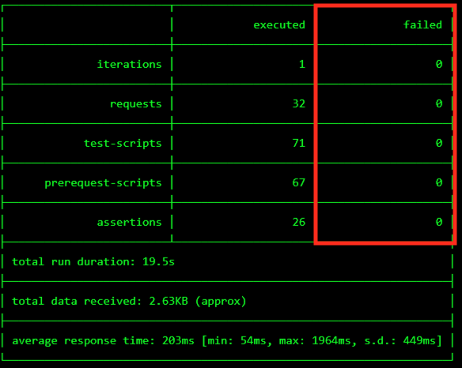
This concludes Lab 1.